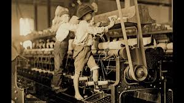

The Industrial Revolution
Period: 1760 – 1840
The Industrial Revolution, beginning in Britain around 1760, transformed human life more rapidly than almost any period before it, shifting economies from agriculture and handcraft to machine-powered factories in the span of a single generation. Steam power, previously used mainly to pump water out of mines, was adapted to run textile mills, locomotives, and ships, collapsing travel times and connecting markets across entire continents for the first time. It also created brutal working conditions, including widespread child labor, that eventually sparked the labor rights movements still shaping workplace law today.
Type: Technological & Economic Revolution